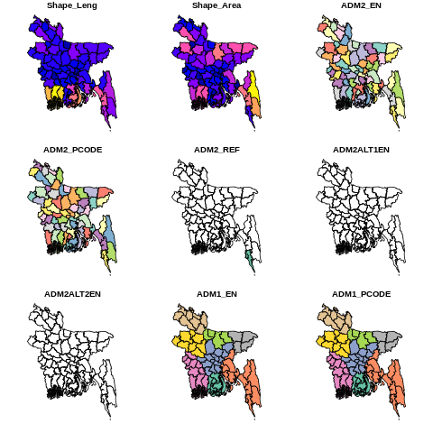
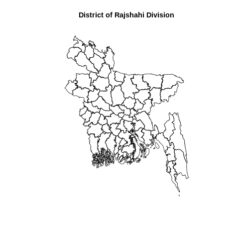
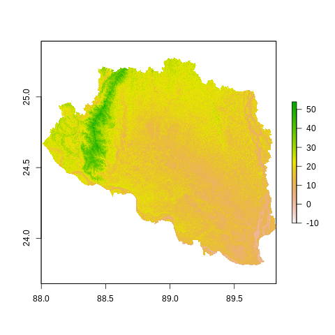
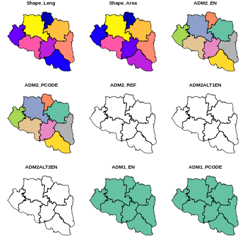

Vector data is a type of geospatial data representation used in Geographic Information Systems (GIS) and computer graphics. It represents spatial information using points, lines, and polygons, which are defined by their geometric coordinates. These coordinates consist of x and y (and sometimes z) values that describe the location of each point, the vertices of lines, or the corners of polygons.
Here’s a breakdown of the main elements of vector data:
Points: A single data point that represents a specific location in space, defined by its x and y coordinates (and potentially z for 3D data). Points are often used to represent features like cities, landmarks, or sampling locations.
Lines (Polylines): A series of connected points, which can be straight or curved, used to represent linear features such as roads, rivers, or boundaries. Lines are composed of multiple vertices that define their shape.
Polygons: Closed shapes formed by connecting a series of lines to enclose an area. Polygons are used to represent features like countries, lakes, forests, and other spatially bounded regions.
Vector data provides a more detailed and accurate representation of geographic features compared to raster data, which is another common data format used in GIS. One of the significant advantages of vector data is that it allows for precise measurements, editing, and analysis of geographic features. It is also more scalable and efficient for storing data with well-defined boundaries and discrete features.
Some common vector data formats include Shapefile (.shp), GeoJSON (.geojson), and Keyhole Markup Language (.kml). These formats can store various attributes along with the spatial coordinates, making it possible to attach additional information (e.g., population data for cities or elevation data for terrain) to each feature represented in the vector dataset.
The shapefile, a interchangeably data format which are regulated by ESRI. It is one of the most common form of geospatial vector data used in GIS software and analyses. Three unique files are required for a shapefile, including: .shx (shape index format; this tags the shapefile with a position, so users can move it forward and backward among layers, a .shp (shape format, which stores geometric data, and a .dbf (attribute format file; which holds attributes (information) for the shapes in the file).
Raster data
Raster data is another type of geospatial data representation used in Geographic Information Systems (GIS) and various other applications. Unlike vector data, which uses points, lines, and polygons to represent spatial information, raster data organizes information in a grid-like structure, with each cell or pixel containing a value that represents a specific attribute or measurement at a particular location.
Key characteristics of raster data include:
Pixel-based representation: Raster data divides the geographic area into a regular grid of pixels, where each pixel corresponds to a specific location on the Earth’s surface. Each pixel stores a value representing a particular attribute, such as elevation, temperature, land use, satellite imagery, or any other continuous data.
Resolution: The resolution of raster data refers to the size of each pixel, which determines the level of detail in the data. Higher resolution means smaller pixel sizes and more detail, while lower resolution means larger pixel sizes and less detail.
Cell values: The cell values in raster data can represent a wide range of information, such as elevation above sea level, temperature readings, land cover categories, or satellite sensor measurements.
Coverage and extent: Raster datasets have a defined coverage area and extent, meaning they represent a specific geographic region with boundaries.
Common examples of raster data include digital elevation models (DEMs) used for terrain representation, satellite imagery, aerial photographs, climate data, and remotely sensed data from various sensors.
Raster data has several advantages, including its ability to efficiently store and process large continuous datasets and perform spatial analysis like interpolation, proximity analysis, and slope calculations. However, it may not be as accurate or suitable for representing discrete features with well-defined boundaries compared to vector data.
Raster data formats often include GeoTIFF (.tif), JPEG (.jpg), PNG (.png), and many other specialized formats depending on the type of data being represented and the intended use.
Unlike vector data, a raster data consists of cells or pixels organized into rows and columns as a matrix where each cell contains a value representing geographical feature on the earth. The size of the area on the surface that each pixel covers is known as the spatial resolution of the image. For instance, an image that has a 1 m spatial resolution means that each pixel in the image represents a 1 m x 1 m area. There are two types of raster data: continuous and discrete. An example of discrete raster data is Land use raster. Data types are flexible, including discrete and categorical data, such as soil or land-use maps, or continuous data as in digital elevation models, precipitation gradient maps, or pollutant concentration maps, etc.
Generally, two types of raster use in GIS and remote sensing application: a single band, or layer measure of a single characteristic of spatial area and multiple bands raster contains multiple spatially corresponding matrices of cell values representing the same spatial area. An example of a single-band raster data set is a digital elevation model (DEM). Each cell in a DEM contains only one value representing elevation of earth surface. Most satellite imagery has multiple bands, typically containing values within band of the electromagnetic spectrum.
R Packages for Spatial Read and Write
sf
The “sf” package provides a consistent and efficient set of tools for handling spatial data, including reading, writing, manipulating, and visualizing spatial data. It also supports various spatial operations and is compatible with many other R packages that deal with spatial data.
Some of the key functionalities of the “sf” package include:
Reading and Writing: Loading and saving spatial data in various formats, such as shapefiles, GeoJSON, and spatial databases.
Data Manipulation: Working with spatial data alongside traditional data frames, allowing for easy filtering, subsetting, and merging of data.
Spatial Operations: Performing geometric operations like intersections, unions, and buffering on spatial data.
Visualization: Creating maps and visualizing spatial data using functions that work well with ggplot2.
Coordinate Transformation: Converting spatial data between different coordinate reference systems (CRS) and projecting data onto different map projections.
install.packages(‘sf’)
rgdal
In the context of R, “rgdal” is a package that provides bindings to the Geospatial Data Abstraction Library (GDAL) for reading, writing, and manipulating geospatial raster and vector data formats. GDAL is a powerful open-source library that supports a wide range of geospatial data formats commonly used in the GIS (Geographic Information Systems) and remote sensing domains.
The “rgdal” package allows R users to work with spatial data in various formats, including but not limited to shapefiles, GeoTIFFs, NetCDF, and more. It enables data import, export, and transformation between different coordinate reference systems (CRS). The package also facilitates the extraction of geospatial information, such as spatial extents and coordinate information.
Important functions and features provided by “rgdal” include:
Data Import and Export: Reading and writing geospatial data to and from various formats using functions like readOGR, writeOGR, readGDAL, writeGDAL, etc.
Coordinate Transformation: Converting data between different CRS using spTransform and project.
Spatial Subsetting: Subsetting and clipping spatial data based on bounding boxes or other spatial objects.
Data Information: Extracting metadata and other geospatial information from datasets.
To use the “rgdal” package in R, you need to install it along with its dependencies. However, it’s important to note that installing the “rgdal” package can be tricky due to the system-level dependencies required by GDAL. Depending on your operating system (Windows, macOS, or Linux), you might need to install additional libraries or packages before successfully installing “rgdal.”
install.packages(‘rgdal’)
raster
the “raster” package is an important R package used for working with raster data, which represents data in grid format (e.g., satellite images, digital elevation models, climate data) rather than vector format (e.g., points, lines, polygons). The package provides a wide range of functionalities for reading, writing, manipulating, and analyzing raster datasets.
The “raster” package is built on top of the “sp” and “rgdal” packages, making it easy to integrate raster data with spatial data. It offers efficient and memory-friendly methods for handling large raster datasets and supports various raster file formats, including GeoTIFF, NetCDF, and more.
Some of the key functionalists of the “raster” package include:
Data Import and Export: Reading and writing raster data from and to various file formats using functions like raster(), brick(), writeRaster(), and more.
Data Manipulation: Resampling, cropping, masking, and reprojecting raster data.
Mathematical Operations: Performing mathematical operations on raster data, such as map algebra, cell statistics, and overlay operations.
Zonal Statistics: Calculating statistics (e.g., mean, sum, max) within defined zones or polygons.
Visualization: Creating various types of plots and visualizations for raster data.
Time Series Analysis: Handling and analyzing raster time series data.
install.packages(‘raster’)
In this exercise, you will learn how to read and write the following types of spatial data with R.
%%R.libPaths('drive/My Drive/R')library(sf) # spatial vector datalibrary (raster) # raster and vector data read & writelibrary (rgdal) # raster and vector data read & write
WARNING:rpy2.rinterface_lib.callbacks:R[write to console]: Linking to GEOS 3.10.2, GDAL 3.4.3, PROJ 8.2.1; sf_use_s2() is TRUE
WARNING:rpy2.rinterface_lib.callbacks:R[write to console]: Loading required package: sp
WARNING:rpy2.rinterface_lib.callbacks:R[write to console]: The legacy packages maptools, rgdal, and rgeos, underpinning the sp package,
which was just loaded, will retire in October 2023.
Please refer to R-spatial evolution reports for details, especially
https://r-spatial.org/r/2023/05/15/evolution4.html.
It may be desirable to make the sf package available;
package maintainers should consider adding sf to Suggests:.
The sp package is now running under evolution status 2
(status 2 uses the sf package in place of rgdal)
WARNING:rpy2.rinterface_lib.callbacks:R[write to console]: Please note that rgdal will be retired during October 2023,
plan transition to sf/stars/terra functions using GDAL and PROJ
at your earliest convenience.
See https://r-spatial.org/r/2023/05/15/evolution4.html and https://github.com/r-spatial/evolution
rgdal: version: 1.6-7, (SVN revision 1203)
Geospatial Data Abstraction Library extensions to R successfully loaded
Loaded GDAL runtime: GDAL 3.4.3, released 2022/04/22
Path to GDAL shared files: /usr/share/gdal
GDAL binary built with GEOS: TRUE
Loaded PROJ runtime: Rel. 8.2.1, January 1st, 2022, [PJ_VERSION: 821]
Path to PROJ shared files: /root/.local/share/proj:/usr/share/proj
PROJ CDN enabled: TRUE
Linking to sp version:2.0-0
To mute warnings of possible GDAL/OSR exportToProj4() degradation,
use options("rgdal_show_exportToProj4_warnings"="none") before loading sp or rgdal.
Data
In this exercise we use following data set:
Spatial polygon of the district of Bangladesh (bd_district.shp)
Spatial point data of soil sampling location under Rajshahi Division of Bangladesh (raj_soil_data_GCS.shp)
Spatial line of road net work of Rajshai division (raj_road_GCS.shp)
SRTM DEM raster of Rajshahi division (raj_DEM_GCS.tif)
Before reading the data from a local drive, you need to define a working directory from where you want to read or to write data. You may use setwd() function to create a working directory. Or we can define a path for data outside of our working directory from where we can read files. In this case, we will use paste0(data path, “file name”). I will load data from my Google drive or directly from my github repository.
Read and Write Vector Data
Poylgons
For reading ESRI shape file, we can use either readOGR() of rgdal or shapefile of raster packages to read shape file from your local drive.
Code
%%R# reading shape file with raster or rgdal package from google drivedist<-rgdal::readOGR("/content/drive/MyDrive/Data/Bangladesh/Shapefiles/bd_district.shp")dist<-raster::shapefile('/content/drive/MyDrive/Data/Bangladesh/Shapefiles/bd_district.shp')
OGR data source with driver: ESRI Shapefile
Source: "/content/drive/MyDrive/Data/Bangladesh/Shapefiles/bd_district.shp", layer: "bd_district"
with 64 features
It has 14 fields
You may also use st_read() from sf package to load shapefile directly from my github using GDAL Virtual File Systems (vsicurl).
Code
%%R# Reading shape file sf package from githubdist.st = sf::st_read("/vsicurl/https://github.com//zia207/r-colab/raw/main/Data/Bangladesh//Shapefiles/bd_district.shp")
Reading layer `bd_district' from data source
`/vsicurl/https://github.com//zia207/r-colab/raw/main/Data/Bangladesh//Shapefiles/bd_district.shp'
using driver `ESRI Shapefile'
Simple feature collection with 64 features and 14 fields
Geometry type: MULTIPOLYGON
Dimension: XY
Bounding box: xmin: 88.00863 ymin: 20.59061 xmax: 92.68031 ymax: 26.63451
CRS: NA
We plot st object using polt() function:
Code
%%Rplot(dist.st)

We can only plot single layer (geometry)
Code
%%Rplot(dist.st$geometry, main="District of Rajshahi Division")

Write spatial polygons
We you can use st_write() to write st objects as shape files
Code
%%Rdist.sp <- sf:::as_Spatial(dist.st$geom) # This worksraster::shapefile(dist.sp, "bd_district.shp", overwrite=TRUE)
We can also use shapefile function of raster package to write the vector data. but before you have to convert st objects to Spatial Polygon dataframe.
WARNING:rpy2.rinterface_lib.callbacks:R[write to console]: writing: substituting ENGCRS["Undefined Cartesian SRS with unknown unit"] for missing CRS
Deleting layer `bd_district' using driver `ESRI Shapefile'
Writing layer `bd_district' to data source
`bd_district.shp' using driver `ESRI Shapefile'
Writing 64 features with 14 fields and geometry type Multi Polygon.
Spatial Point data
We will read point shape file containing around 5,000 soil samples points of Rajshahi Division. These samples were collected by the SRDI. We will use shapefile() or st_read() to read this vector data.
Code
%%R## Reading point shape file with raster package from google drivepoint<-raster::shapefile('/content/drive/MyDrive/Data/Bangladesh/Shapefiles/raj_soil_data_GCS.shp')print(proj4string(point.GCS))
[1] "+proj=longlat +datum=WGS84 +no_defs"
Code
%%R# from githubpoint.st = sf::st_read("/vsicurl/https://github.com//zia207/r-colab/raw/main/Data/Bangladesh//Shapefiles/raj_soil_data_GCS.shp")
Reading layer `raj_soil_data_GCS' from data source
`/vsicurl/https://github.com//zia207/r-colab/raw/main/Data/Bangladesh//Shapefiles/raj_soil_data_GCS.shp'
using driver `ESRI Shapefile'
Simple feature collection with 5796 features and 34 fields
Geometry type: POINT
Dimension: XY
Bounding box: xmin: 88.05378 ymin: 23.8279 xmax: 89.81412 ymax: 25.26618
Geodetic CRS: WGS 84
Code
%%Rplot(point.st, main="Point Vector map", pch=20, # symbol type cex=0.8) # symbol size
One-dimensional lines, also called polylines, are used to represent geographical features like rivers, roads, railroads, trails, and topographic lines. Note that these features are linear in nature and do not have area like polygons. Hence, they can measure distance.
Code
%%R# from google driveline<-raster::shapefile('/content/drive/MyDrive/Data/Bangladesh/Shapefiles/raj_road_GCS.shp') # with raster
Code
%%R# from githublines.st = sf::st_read("/vsicurl/https://github.com//zia207/r-colab/raw/main/Data/Bangladesh//Shapefiles/raj_road_GCS.shp")
Reading layer `raj_road_GCS' from data source
`/vsicurl/https://github.com//zia207/r-colab/raw/main/Data/Bangladesh//Shapefiles/raj_road_GCS.shp'
using driver `ESRI Shapefile'
Simple feature collection with 1596 features and 7 fields
Geometry type: MULTILINESTRING
Dimension: XY
Bounding box: xmin: 88.10178 ymin: 23.83185 xmax: 89.80968 ymax: 25.2748
Geodetic CRS: WGS 84
A single band raster, also known as a single-band image or grayscale image, is a type of raster data that contains only one band or layer of information. In a single-band raster, each pixel is represented by a single value, typically indicating a certain property or characteristic at that location. The value of each pixel in the raster corresponds to the magnitude of the property being measured at that specific location. Digital Elevation Models (DEMs) represent the elevation or height values of the Earth’s surface at each pixel location. DEMs are often used in terrain analysis, hydrology, and 3D visualization.
raster() function of raster package will use to read the single band raster data, such DEM in R
Code
%%R# from google drivedem = raster::raster("/content/drive/MyDrive/Data/Bangladesh/Raster/raj_DEM_GCS.tif")plot(dem)

Code
%%R# from githubdem= raster::raster("/vsicurl/https://github.com//zia207/r-colab/raw/main/Data/Bangladesh/Raster/raj_DEM_GCS.tif")dem
A multiband raster, also known as a multi-band image, is a type of raster data that contains multiple bands or layers of information. Each band in the raster represents a different property or characteristic at each pixel location on the Earth’s surface. Multiband rasters are widely used in various fields, including remote sensing, GIS (Geographic Information Systems), and image processing, to capture and analyze complex data that cannot be represented in a single band.
For loading multi-bands image in R, we will use a sub-set of Landsat 9 multispectral image covering Onondaga county of New York state. This image was downloaded from USGS Earth Explore.
You can read single band image one by one with raster() function.
Code
%%R# read band 2 (Blue band)b2=raster::raster('/content/drive/MyDrive/Data/Bangladesh/LC09_L2SP_138043_20221216_20221223_02_T1/LC09_L2SP_138043_20221216_20221223_02_T1_SR_B2.TIF')# read band 3 (Green band)b3=raster::raster('/content/drive/MyDrive/Data/Bangladesh/LC09_L2SP_138043_20221216_20221223_02_T1/LC09_L2SP_138043_20221216_20221223_02_T1_SR_B3.TIF')# read band 4 (Red band)b4=raster::raster('/content/drive/MyDrive/Data/Bangladesh/LC09_L2SP_138043_20221216_20221223_02_T1/LC09_L2SP_138043_20221216_20221223_02_T1_SR_B4.TIF')# read band 5 (NIR band)b5=raster::raster('/content/drive/MyDrive/Data/Bangladesh/LC09_L2SP_138043_20221216_20221223_02_T1/LC09_L2SP_138043_20221216_20221223_02_T1_SR_B5.TIF')
Now, you can use stack() or brick() function to create multi-band raster stack
GeoJSON is a format for encoding geographic data structures using JavaScript Object Notation (JSON). It is commonly used for representing geographical features and their attributes such as points, lines, polygons, and more. GeoJSON is widely used in web mapping applications and geographic information systems (GIS) due to its simplicity, easy integration with web technologies, and human-readability.
Here’s an example of a simple GeoJSON representation for a point feature:
Code
{"type": "Feature","geometry": {"type": "Point","coordinates": [longitude, latitude] },"properties": {"name": "Sample Point","description": "This is an example of a GeoJSON point feature." }}
Here’s an explanation of the key components:
type: Specifies the type of the GeoJSON object. It can be “Feature,” “FeatureCollection,” “Point,” “LineString,” “Polygon,” and others.
geometry: Contains the geometric data for the feature, such as the coordinates for a point, the array of coordinates for a line or polygon, etc.
coordinates: The array of coordinates in the format [longitude, latitude] for points and [ [lon1, lat1], [lon2, lat2], ..., [lonN, latN] ] for lines and polygons.
properties: An object that holds additional properties or attributes associated with the feature.
We use st_read() from sf package read raj_district_GCS.geojson from github using “vsicurl”
Code
%%R# from my githubraj.st = sf::st_read("/vsicurl/https://github.com//zia207/r-colab/raw/main/Data/Bangladesh//Shapefiles/raj_district_GCS.geojson")
Reading layer `raj_district_GCS' from data source
`/vsicurl/https://github.com//zia207/r-colab/raw/main/Data/Bangladesh//Shapefiles/raj_district_GCS.geojson'
using driver `GeoJSON'
Simple feature collection with 8 features and 14 fields
Geometry type: MULTIPOLYGON
Dimension: XY
Bounding box: xmin: 88.00863 ymin: 23.80807 xmax: 89.82498 ymax: 25.27759
Geodetic CRS: WGS 84
Code
%%Rplot(raj.st)

We also use geojsonsf to read and write GeoJSON data in R.
WARNING:rpy2.rinterface_lib.callbacks:R[write to console]: writing: substituting ENGCRS["Undefined Cartesian SRS with unknown unit"] for missing CRS
Writing layer `bd_district_GCS.geojson' to data source
`G:\My Drive\Data\Bangladesh\bd_district_GCS.geojson' using driver `GeoJSON'
Writing 64 features with 14 fields and geometry type Multi Polygon.
KML
Keyhole Markup Language (KML) is an XML-based file format used to represent geographic data and features in 3D Earth browsers, such as Google Earth, Google Maps, and other mapping applications. KML was developed by Keyhole, Inc., which was acquired by Google in 2004, and it became an open standard in 2008.
KML files are structured as XML documents and are used to describe and display various types of geographical data, including points, lines, polygons, images, and overlays. KML allows you to define the geometry, attributes, and styles of these features. It is particularly useful for creating custom geographic content that can be displayed on digital maps and shared easily.
Code
<?xml version="1.0" encoding="UTF-8"?><kml xmlns="http://www.opengis.net/kml/2.2"><Placemark><name>Sample Point</name><description>This is an example of a KML point feature.</description><Point><coordinates>-122.4194,37.7749,0</coordinates></Point></Placemark></kml>
You can use the sf package, which provides functions for reading and writing KML files